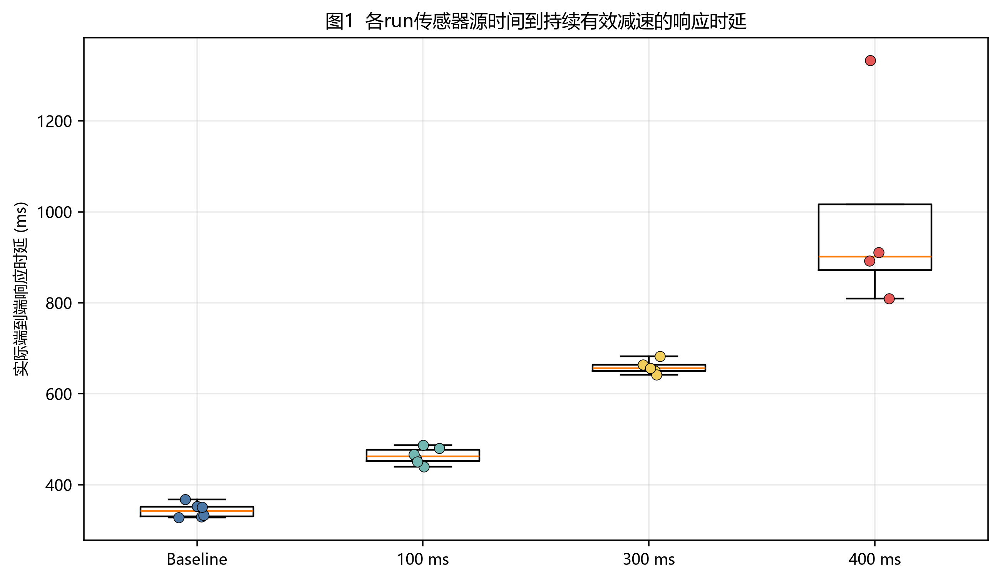
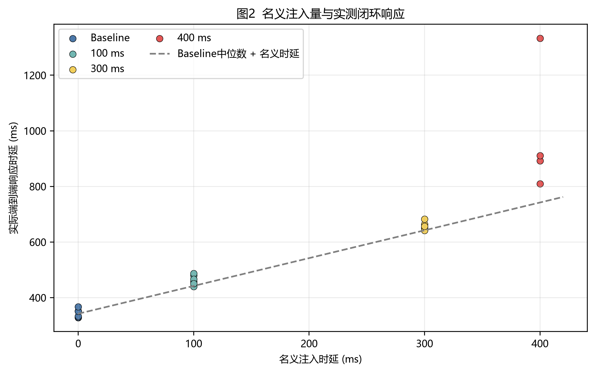
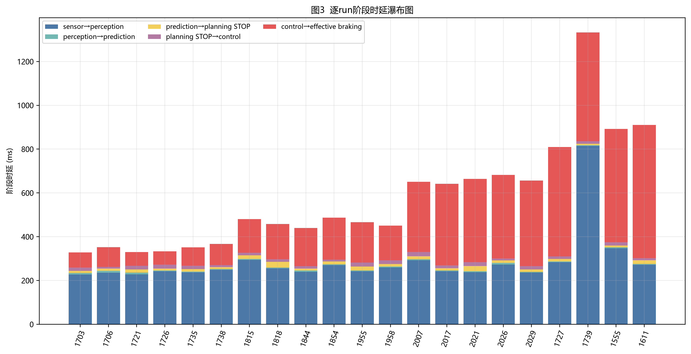
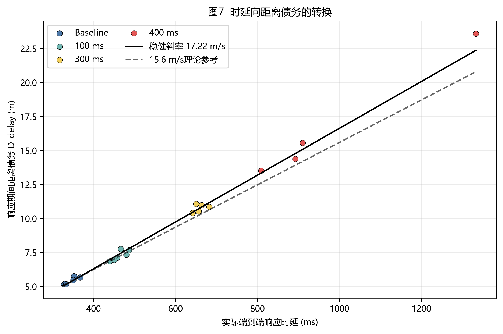
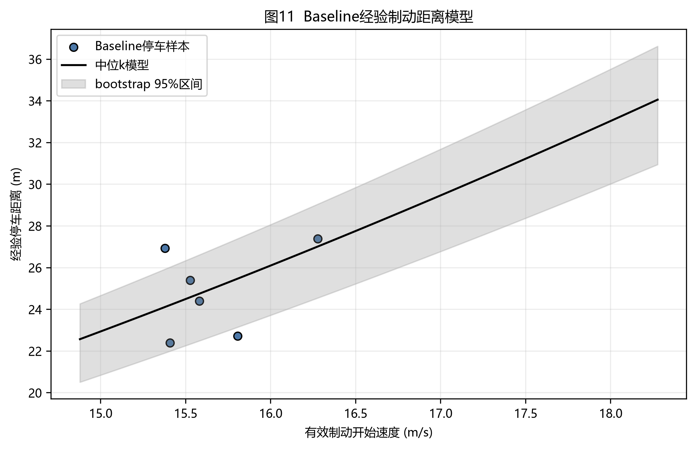
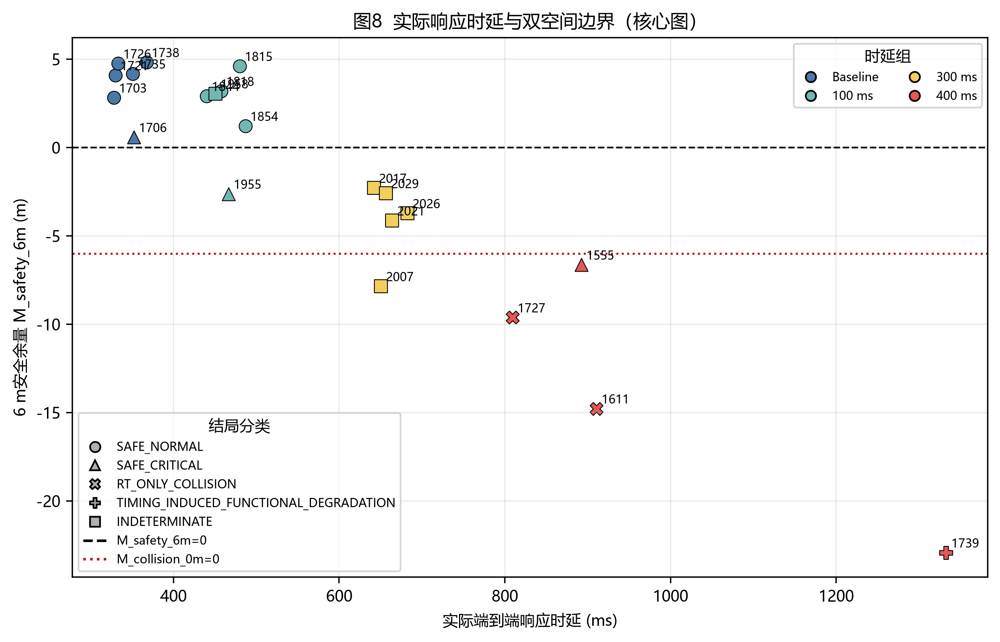
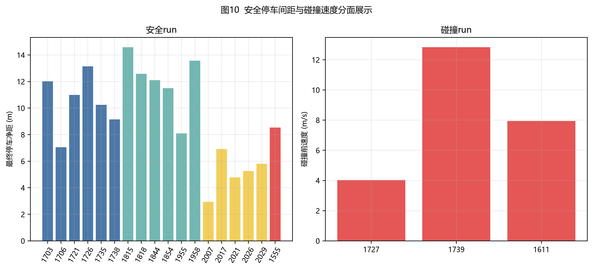
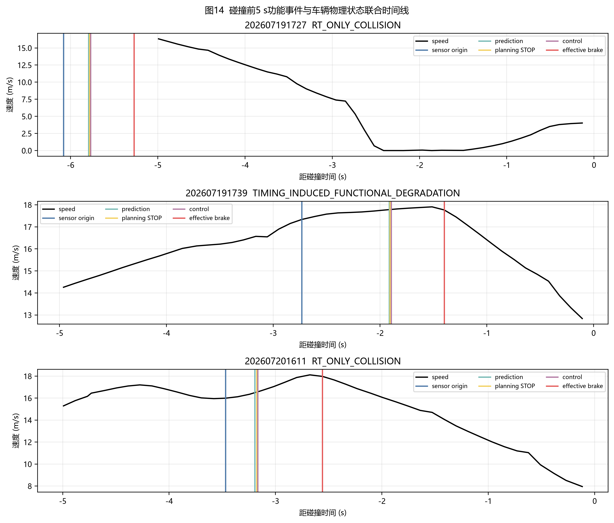
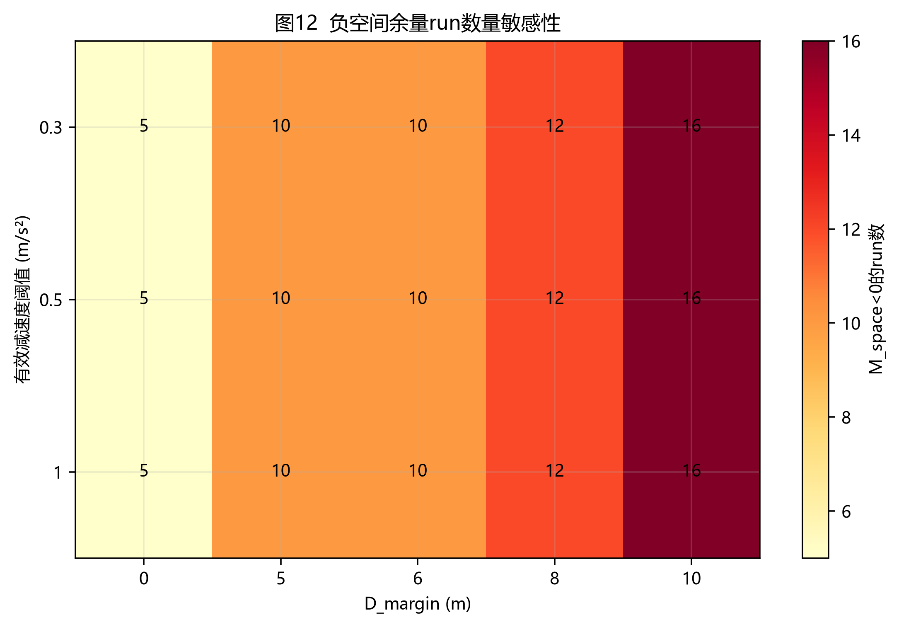

本次分析完整识别23次实验：baseline 6次、100 ms组6次、300 ms组6次、400 ms组5次。固定条件为Town04、CARLA/Bridge同步步长0.1 s、点云配置130万、静止障碍物场景。t1实际速度范围为14.769–17.336 m/s，稳定感知纵向净距范围为38.854–41.579 m。
四组观测闭环响应中位数依次为342.145、462.113、656.455和901.492 ms。相对baseline的中位响应增量依次为119.969、314.310和559.347 ms。400 ms组记录3/5次目标碰撞，其余三组未记录碰撞。
严格因果分类得到RT_ONLY_COLLISION run：202607191727, 202607201611；TIMING_INDUCED_FUNCTIONAL_DEGRADATION run：202607191739；INDETERMINATE run：202607181958, 202607182007, 202607182012, 202607182017, 202607182021, 202607182026, 202607182029, 202607191734。最大安全观测响应为892.358 ms；最小RT-only碰撞响应为809.268 ms。全部目标碰撞中的最小响应为809.268 ms，安全与目标碰撞响应区间重叠。
主要不确定性包括：注入组SCB归档缺失run为202607181958, 202607182007, 202607182017, 202607182021, 202607182026, 202607182029；多数SCB触发早于t1；非碰撞run缺少CARLA actor history；ControlCommand具体brake payload未归档；Localization典型采样周期约110.7 ms。
自车约15–17 m/s行驶，在前方生成静止车辆障碍物。Apollo传感器理论感知范围约50 m，稳定感知净距集中于约40 m。四组名义附加时延为0、100、300和400 ms。Bridge直接订阅/apollo/control，Guardian未进入执行链。注入器使用单调墙钟队列延后CARLA apply_control()。
归档中的工作区settings快照与实际run参数存在版本差异。实验条件采用用户记录；Town04由3个碰撞event直接验证；0.1 s步长由实验设定及SCB frame/simulation delay交叉检查；130万点云原始计数未保存在run目录。
本章的目的，是把一条run中的日志时间、车辆运动和碰撞结果整理成同一条物理链：障碍物在何时具备稳定感知条件，车辆当时距离障碍物多远，系统经过多久才产生有效减速，响应期间消耗了多少距离，剩余距离能否完成停车。
每条run按以下顺序处理：
核心变量可按下表理解：
| 字段 | 含义 | 数据来源 |
|---|---|---|
| t1 / t_sensor_origin | 稳定感知序列第一帧的传感器源时间，也是空间计算起点 | Fusion源点云时间 |
| v1 | t1时刻自车速度 | Localization插值 |
| D1 | t1时刻车头到障碍物近端的纵向净距 | Fusion几何与车辆尺寸修正 |
| t2 / t_brake_effective | 车辆首次进入持续有效物理减速状态的时刻 | Localization速度序列 |
| v2 | t2时刻的制动起始速度 | Localization插值 |
| T_e2e | 从稳定感知源帧到有效物理减速的总响应时间 | t2 − t1 |
| D_delay | 响应完成前车辆继续行驶的距离 | t1到t2的速度积分 |
| D_brake_required | 从t2开始降至近零速度所需的经验制动距离 | baseline经验模型 |
| M_collision_0m | 不要求附加安全距离时的碰撞余量 | 空间预算计算 |
| M_safety_6m | 停车后仍要求保留6 m时的安全余量 | 空间预算计算 |
空间预算可以直观写成：
$$ \underbrace{D_1}{\text{最初可用净距}} =\underbrace{D{\mathrm{delay}}}{\text{响应期间行驶}} +\underbrace{D{\mathrm{brake,required}}}{\text{开始制动后所需距离}} +\underbrace{M{\mathrm{collision,0m}}}_{\text{最终剩余量}}. $$
Apollo模块日志、Localization、CARLA仿真时间和服务器墙钟来自不同时间域。直接相减可能把时钟偏移误认为模块时延，因此主分析先把事件放到可比较的时间轴上。
$$ \mathrm{wall_time}=a\times\mathrm{simulation_time}+b $$
将CARLA碰撞时刻映射到墙钟，再与Apollo事件对齐；拟合残差保存在clock_alignment.csv。
- 缺少双时钟history的安全run仍可计算Apollo内部的 $t_1$、$t_2$ 和响应时延，但无法对CARLA仿真时刻执行同等级别的跨时钟复核，因此标记为LIMITED_NO_DUAL_CLOCK_HISTORY。
该状态表示跨系统时间证据受限，Apollo内部物理响应指标仍然保留。
首先要保证CARLA中发生接触的车辆、Apollo感知到的障碍物、Prediction中的静态目标以及Planning生成STOP决策的目标属于同一物理对象。
单帧检测可能来自瞬时误检或目标ID抖动，因此主定义要求目标连续3个Fusion周期稳定出现。$t_1$ 取这3帧中第一帧的源点云时间。这里采用源时间，可以把感知计算和排队时间完整计入后续响应；2帧和5帧定义进入敏感性分析，用于检查结论是否依赖“三帧”这一选择。
$D_1$ 表示自车前缘到障碍物近端的纵向净距，属于保险杠到保险杠的可用距离。计算形式为
$$ D_1=\Delta s_{\mathrm{center}}-5.3074\,\mathrm{m}, $$
其中 $\Delta s_{\mathrm{center}}$ 是沿自车行驶方向投影后的两车中心间距，$5.3074\,\mathrm{m}$ 是两车半车长之和形成的组合几何偏移。例如中心投影距离为45 m时，净距约为39.69 m。
归档没有保存每条run的CARLA bounding box extent，主分析统一使用该组合偏移。3次真实接触帧显示这一偏移存在约 $\pm0.52\,\mathrm{m}$ 的变化，因此报告将其作为几何不确定性，不把小于该量级的余量差异解释为精确边界。
$t_2$（有效物理制动起点）：车辆已经对本次障碍物响应，并在Localization速度序列中首次进入持续有效减速状态的时刻。$t_2$ 取物理速度开始持续下降的时间，不取Planning生成减速轨迹的时间，也不取Control消息发布的时间。
完整事件顺序为：障碍物源帧t1 → Perception → Prediction → Planning STOP/减速轨迹 → Control输出 → 车辆有效物理减速t2。因此，$t_2-t_1$ 覆盖软件计算、消息传递、Bridge等待以及车辆执行响应。
Localization存在采样噪声，单个速度差分为负不足以证明车辆已经进入持续制动。主判据要求相邻速度区间连续两次达到至少 $0.5\,\mathrm{m/s^2}$ 的减速度，并在随后 $0.3\,\mathrm{s}$ 内累计降速至少 $0.3\,\mathrm{m/s}$。相邻区间加速度定义为
$$ a_i=\frac{v_{i+1}-v_i}{t_{i+1}-t_i}, $$
因此连续两次有效减速要求 $a_i\leq-0.5\,\mathrm{m/s^2}$。后续区间和0.3 s累计降速用于确认这次下降具有持续性；确认通过后，$t_2$ 仍记录为第一段合格减速区间结束处的Localization样本时间，不额外加上0.3 s确认窗口。若目标Control输出前已经存在持续且显著的减速过程，该run标记为ATTRIBUTION_INVALID，避免把先前制动错误归因到本次障碍物响应。
这里的 $0.5\,\mathrm{m/s^2}$ 只用于检测“减速何时真正开始”，不代表Planning设定的目标减速度，也不代表fallback减速度。主结果采用原始速度序列；三点中值平滑以及 $a_{\mathrm{th}}\in\left\lbrace0.3,0.5,1.0\right\rbrace\,\mathrm{m/s^2}$ 的组合进入敏感性分析。
至此两个端点已经明确：$t_1$ 是稳定感知序列第一帧的传感器源时间，$t_2$ 是车辆持续有效物理减速的起点。实际端到端响应时延定义为
$$ T_{\mathrm{e2e}}=t_2-t_1,\qquad L_{\mathrm{e2e}}=1000T_{\mathrm{e2e}}\;\mathrm{ms}. $$
该时延包含从源点云产生到车辆物理减速之间的感知、预测、规划、控制和执行环节。它是实测闭环响应，不等同于Bridge配置的名义100/300/400 ms等待值。
响应期间距离债务采用速度—时间梯形积分：
$$ D_{\mathrm{delay}}\approx \sum_i\frac{v_i+v_{i+1}}{2}\left(t_{i+1}-t_i\right), \qquad t_i\in\left[t_1,t_2\right]. $$
$D_{\mathrm{delay}}$ 是车辆开始有效制动前已经消耗的距离，baseline也包含系统固有响应时间，因此baseline的该值不会为0。$D_{\mathrm{brake,required}}$ 是从 $t_2$ 开始到近零速度仍需要的距离。两者分别对应制动前和制动后两个连续阶段，不重复计数。
停车相关端点分开记录：
| 端点 | 判据 | 用途 |
|---|---|---|
| 近停时刻 t_near_stop | 首个速度低于0.1 m/s的样本 | 判断车辆是否曾达到近零速度 |
| 严格停车时刻 t_stop | 速度低于0.1 m/s并持续至少0.5 s | 提供严格停车保持证据 |
| 经验制动完成端点 | t2之后的最低速度样本，并且该run确实达到低于0.1 m/s | 计算baseline经验制动位移 |
Baseline按权威handoff口径计算从 $t_2$ 到经验制动完成端点的三维位置位移。以 $v_2=v(t_2)$ 为输入，建立
$$ D_{\mathrm{brake,required}}(v_2)=k_{\mathrm{median}}v_2^2. $$
$k_{\mathrm{median}}$ 来自6条baseline近停样本的中位模型。碰撞run不参与模型拟合，只使用该模型估计其在当前制动起始速度下所需的停车距离。速度积分路径长单独保留为诊断字段。
无附加安全距离的碰撞余量定义为
$$ M_{\mathrm{collision,0m}} =D_1-D_{\mathrm{delay}}-D_{\mathrm{brake,required}}. $$
保留6 m安全距离的余量定义为
$$ M_{\mathrm{safety,6m}} =D_1-D_{\mathrm{delay}}-D_{\mathrm{brake,required}}-6\,\mathrm{m}. $$
两者满足
$$ M_{\mathrm{collision,0m}}=M_{\mathrm{safety,6m}}+6\,\mathrm{m}. $$
符号含义如下：
| 结果 | 物理含义 |
|---|---|
| M_safety_6m > 0 | 经验模型预测能够停车，并保留超过6 m距离 |
| M_collision_0m > 0，同时M_safety_6m < 0 | 经验模型预测可以避免接触，但停车后不足6 m |
| M_collision_0m = 0 | 经验模型的接触临界位置 |
| M_collision_0m < 0 | 可用距离不足以覆盖响应距离与经验制动距离，负值绝对值表示空间缺口 |
安全距离参数 $D_{\mathrm{margin}}\in\left\lbrace0,5,6,8,10\right\rbrace\,\mathrm{m}$ 全部进入敏感性计算。0 m用于描述接触边界，6 m用于主安全裕度，其余数值用于检查结论对安全距离设定的敏感程度。
反事实分析回答的问题是：如果该run的闭环响应时间恢复到baseline中位水平，在其他量保持当前经验模型口径时，可以少消耗多少响应距离？令
$$ \Delta T=T_{\mathrm{e2e,observed}}-T_{\mathrm{e2e,baseline\ median}}, $$
程序直接积分观测速度历史中有效制动前最后 $\Delta T$ 的行驶距离：
$$ D_{\mathrm{saved}}=\int_{t_2-\Delta T}^{t_2}v(t)\,\mathrm{d}t, \qquad M^{\mathrm{cf}}=M^{\mathrm{observed}}+D_{\mathrm{saved}}. $$
该计算使用逐run实际速度历史，不采用固定15.6 m/s近似。它用于量化额外响应时间对应的空间损失，不单独承担碰撞归因。RT_ONLY_COLLISION由注入证据、功能链完整性、碰撞结果和baseline安全结果联合判定；Planning进入设计内fallback仍按正常功能响应记录。
以202607191727为例：$D_1=39.434\,\mathrm{m}$，响应期间行驶距离 $D_{\mathrm{delay}}=13.520\,\mathrm{m}$，经验所需制动距离约为 $29.540\,\mathrm{m}$。因此
$$ M_{\mathrm{collision,0m}} =39.434-13.520-29.540 =-3.626\,\mathrm{m}, $$
表示观测条件下存在约3.626 m空间缺口。再扣除6 m安全距离后：
$$ M_{\mathrm{safety,6m}}=-3.626-6=-9.626\,\mathrm{m}. $$
该run相对baseline响应可节省距离为 $D_{\mathrm{saved}}=7.959\,\mathrm{m}$，所以反事实结果为
$$ M_{\mathrm{collision,0m}}^{\mathrm{cf}} =-3.626+7.959 =4.332\,\mathrm{m}, $$
$$ M_{\mathrm{safety,6m}}^{\mathrm{cf}} =-9.626+7.959 =-1.668\,\mathrm{m}. $$
这组数值表示：响应恢复到baseline水平后，经验模型预测可以避免接触并剩余约4.332 m；距离完整6 m安全目标仍少约1.668 m。该run同时具备注入执行证据、五模块PASS、目标碰撞与baseline全安全结果，因此分类为RT_ONLY_COLLISION。
23次run数量与实验设计一致。输入文件清单、SHA-256、schema和完整性状态分别保存在data_inventory.csv、input_file_hashes.csv、schema_inventory.json与run_manifest.csv。注入组有6次缺少SCB文件，这些run保留物理响应结果，并在名义注入因果判断中标记不确定。
| run | 组 | 文件数 | SCB | 碰撞 | 完整性 |
|---|---|---|---|---|---|
| 202607171703 | baseline | 32 | 是 | 否 | COMPLETE |
| 202607171706 | baseline | 32 | 是 | 否 | COMPLETE |
| 202607171721 | baseline | 32 | 是 | 否 | COMPLETE |
| 202607171726 | baseline | 32 | 是 | 否 | COMPLETE |
| 202607171735 | baseline | 32 | 是 | 否 | COMPLETE |
| 202607171738 | baseline | 32 | 是 | 否 | COMPLETE |
| 202607181815 | delay_100ms | 32 | 是 | 否 | COMPLETE |
| 202607181818 | delay_100ms | 32 | 是 | 否 | COMPLETE |
| 202607181844 | delay_100ms | 32 | 是 | 否 | COMPLETE |
| 202607181854 | delay_100ms | 32 | 是 | 否 | COMPLETE |
| 202607181955 | delay_100ms | 32 | 是 | 否 | COMPLETE |
| 202607181958 | delay_100ms | 31 | 否 | 否 | PARTIAL_INJECTION_UNVERIFIED |
| 202607182007 | delay_300ms | 31 | 否 | 否 | PARTIAL_INJECTION_UNVERIFIED |
| 202607182012 | delay_300ms | 32 | 是 | 否 | COMPLETE |
| 202607182017 | delay_300ms | 31 | 否 | 否 | PARTIAL_INJECTION_UNVERIFIED |
| 202607182021 | delay_300ms | 31 | 否 | 否 | PARTIAL_INJECTION_UNVERIFIED |
| 202607182026 | delay_300ms | 31 | 否 | 否 | PARTIAL_INJECTION_UNVERIFIED |
| 202607182029 | delay_300ms | 31 | 否 | 否 | PARTIAL_INJECTION_UNVERIFIED |
| 202607191727 | delay_400ms | 35 | 是 | 是 | COMPLETE |
| 202607191734 | delay_400ms | 32 | 是 | 否 | COMPLETE |
| 202607191739 | delay_400ms | 35 | 是 | 是 | COMPLETE |
| 202607201555 | delay_400ms | 32 | 是 | 否 | COMPLETE |
| 202607201611 | delay_400ms | 35 | 是 | 是 | COMPLETE |
| 组 | 总n | 有效响应n | 实际响应中位数/ms | 相对baseline增量/ms | D_delay中位数/m | M_safety_6m中位数/m | 碰撞次数 |
|---|---|---|---|---|---|---|---|
| Baseline | 6 | 6 | 342.145 | 0.000 | 5.333 | 4.125 | 0 |
| 100 ms | 6 | 6 | 462.113 | 119.969 | 7.228 | 2.976 | 0 |
| 300 ms | 6 | 5 | 656.455 | 314.310 | 10.860 | -3.728 | 0 |
| 400 ms | 5 | 4 | 901.492 | 559.347 | 14.974 | -12.204 | 3 |
| 组 | 有SCB实测n | 墙钟实际等待中位数/ms | 最小/ms | 最大/ms |
|---|---|---|---|---|
| Baseline | 6 | 7.234 | 0.141 | 12.384 |
| 100 ms | 5 | 105.508 | 100.078 | 109.280 |
| 300 ms | 1 | 309.970 | 309.970 | 309.970 |
| 400 ms | 5 | 402.912 | 401.336 | 420.415 |
SCB文件存在的run直接证明请求等待值、墙钟实际等待值、CARLA帧差和仿真时间差。缺少SCB的run仅保留组目录给出的名义值。Bridge触发后持续延迟全部后续ControlCommand；提前触发会改变弯道与接近阶段控制，组间单变量解释需要附带该限制。

图1字段说明：纵轴为每个run实测t_sensor_origin→t_brake_effective；散点保留全部有效run；箱体显示组内中位数和四分位范围。

图2字段说明：横轴为配置组别，纵轴为实测闭环响应；虚线表示baseline中位数加名义注入量。

图3字段说明：每根堆叠柱对应一个有效run；颜色依次表示sensor→perception、perception→prediction、prediction→planning STOP、planning STOP→control和control→物理减速。负阶段值按0显示，原始值保留在表4。
D_delay对实际响应秒数的稳健回归斜率为17.222 m/s，95%斜率区间为16.331–18.181 m/s；实验速度的局部理论参考约15.6 m/s。线性回归R²为0.995。时延通过响应期间持续行驶转化为空间债务。

图7字段说明：D_delay来自Localization速度梯形积分；黑实线为Theil–Sen稳健拟合；虚线为15.6 m/s理论参考。
| 指标 | Kruskal–Wallis H | p值 |
|---|---|---|
| 实际响应 | 18.701299 | 0.000315 |
| D_delay | 18.701299 | 0.000315 |
| M_space | 15.353680 | 0.001538 |
| 指标 | 比较 | Holm校正p | Cliff’s δ（注入组−baseline） |
|---|---|---|---|
| 实际响应 | 100 ms vs Baseline | 0.006494 | 1.000000 |
| 实际响应 | 300 ms vs Baseline | 0.008658 | 1.000000 |
| 实际响应 | 400 ms vs Baseline | 0.009524 | 1.000000 |
| D_delay | 100 ms vs Baseline | 0.006494 | 1.000000 |
| D_delay | 300 ms vs Baseline | 0.008658 | 1.000000 |
| D_delay | 400 ms vs Baseline | 0.009524 | 1.000000 |
| M_space | 100 ms vs Baseline | 0.309524 | -0.388889 |
| M_space | 300 ms vs Baseline | 0.012987 | -1.000000 |
| M_space | 400 ms vs Baseline | 0.019048 | -1.000000 |
统计字段说明：H检验比较四组分布；Holm校正控制同一指标的三次两两比较；Cliff's δ为1表示注入组所有观测值均高于baseline，-1表示均低于baseline。样本量较小，p值和效应量用于探索性描述。
第三章把接近障碍物的空间分成两个连续阶段：$t_1$ 到 $t_2$ 是系统尚未产生有效物理减速的响应阶段，$t_2$ 之后是车辆实际降低速度的制动阶段。第六章计算了响应阶段消耗的 $D_{\mathrm{delay}}$；本章估计从 $t_2$ 开始降到近零速度仍需要的 $D_{\mathrm{brake,required}}$。
两段距离共同进入0 m碰撞余量：
$$ D_1 =D_{\mathrm{delay}} +D_{\mathrm{brake,required}} +M_{\mathrm{collision,0m}}. $$
只有先估计所需制动距离，才能知道初始空间中最多允许多少距离用于系统响应，并进一步得到最晚允许响应时间。
碰撞run在车辆完成停车前已经接触障碍物，其碰撞前制动距离属于截断观测，无法表示完整停车需要的距离。模型因此只使用6条无碰撞Baseline run。这6条run都在 $t_2$ 后达到过低于0.1 m/s的近零速度，可以测量完整的近停位移。
| run | t2速度/m/s | 三维制动位移/m | 积分路径长/m | k值/s²·m⁻¹ | 等效减速度/m/s² | 保持0.5 s严格停车 |
|---|---|---|---|---|---|---|
| 202607171703 | 15.805458 | 22.722443 | 25.146742 | 0.090958 | 5.497043 | 是 |
| 202607171706 | 16.276229 | 27.395764 | 31.211360 | 0.103413 | 4.834974 | 否 |
| 202607171721 | 15.580507 | 24.402371 | 27.744230 | 0.100524 | 4.973947 | 否 |
| 202607171726 | 15.407071 | 22.394972 | 25.494855 | 0.094343 | 5.299802 | 否 |
| 202607171735 | 15.525764 | 25.399782 | 29.629852 | 0.105372 | 4.745107 | 否 |
| 202607171738 | 15.378049 | 26.937785 | 31.052875 | 0.113909 | 4.389455 | 否 |
6条样本的三维制动位移范围为22.395–27.396 m，均值为24.876 m；其中1条同时满足低于0.1 m/s并持续0.5 s的严格停车保持。
近停与严格停车承担不同作用：达到过低于0.1 m/s即可测量“从开始制动到近零速度需要多少距离”；持续0.5 s用于证明车辆随后保持停车。当前模型估计近停距离，不对后续停车保持作保证。
每条Baseline先确定有效物理制动起点 $t_2$ 和起始速度 $v_2$，再寻找 $t_2$ 之后的最低速度样本。只有该run确实达到过低于0.1 m/s时，最低速度样本才作为经验制动完成端点。主制动位移定义为
$$ D_{\mathrm{brake,empirical}} =\left|\mathbf p_{\mathrm{min\ speed}}-\mathbf p_{t_2}\right|_2. $$
该量是制动起点到近停端点的三维Localization直线位移。Town04道路存在弯曲，车辆沿轨迹实际走过的积分路径长会更长；本批6条Baseline的积分路径长范围为25.147–31.211 m。主分析沿用权威handoff口径使用三维位移，积分路径长单独保留为诊断字段。
因此，本章的“经验制动距离”属于当前场景下的统一分析口径，不能直接替代沿道路中心线测量的真实路径长度。
车辆从速度 $v$ 降到接近0时，基础运动学关系为
$$ v_f^2=v^2+2as. $$
令 $v_f\approx0$，并用正值 $a_{\mathrm{eff}}$ 表示整个制动过程的等效减速度大小，可得
$$ D_{\mathrm{brake}} \approx\frac{v^2}{2a_{\mathrm{eff}}}. $$
定义
$$ k=\frac{1}{2a_{\mathrm{eff}}}, $$
即可得到经验模型
$$ D_{\mathrm{brake,required}}(v)=kv^2. $$
对每条Baseline分别计算
$$ k_i=\frac{D_i}{v_i^2},\qquad a_{\mathrm{eff},i}=\frac{v_i^2}{2D_i}. $$
报告采用6个 $k_i$ 的中位数，降低单条异常停车轨迹的影响：
$$ k_{\mathrm{median}}=0.10196848\,\mathrm{s^2/m}. $$
最终主模型为
$$ D_{\mathrm{brake,required}}(v) =0.10196848v^2. $$
速度对停车距离呈平方影响。当前模型给出的示例如下：
| 有效制动起始速度/m·s⁻¹ | 模型所需制动距离/m |
|---|---|
| 15.000 | 22.943 |
| 15.500 | 24.498 |
| 16.000 | 26.104 |
| 16.500 | 27.761 |
| 17.000 | 29.469 |
经验制动位移均值24.876 m只用于描述6条原始样本。逐run余量计算使用 $k_{\mathrm{median}}v_2^2$，会根据该run在 $t_2$ 的实际速度调整所需制动距离。
由 $k=1/(2a_{\mathrm{eff}})$ 可将模型换算为中位等效减速度：
$$ a_{\mathrm{eff,median}}=4.904\,\mathrm{m/s^2}. $$
该数值由“$t_2$速度和近停三维位移”反推，表示整个制动过程的等效能力。它不等同于Planning轨迹的瞬时减速度、ControlCommand制动百分比、Localization峰值减速度或Apollo fallback配置值。
三次碰撞run的Planning日志确认速度求解不可行后进入恒减速度fallback；约4 m/s²来自用户确认的当前Apollo配置行为，归档日志没有保存该数值配置快照。若按恒定4 m/s²和16 m/s起始速度计算，理论制动距离为
$$ D=\frac{16^2}{2\times4}=32.000\,\mathrm{m}. $$
Baseline经验模型在16 m/s时给出26.104 m，数值更小。差异可能来自实际减速度过程、弯道路段三维位移口径、制动端点和车辆动力学。当前主报告按Baseline实测模型保持与handoff一致；若目标转为保守安全认证，固定4 m/s²模型适合作为并行保守边界。
样本量只有6条。报告以固定随机种子执行5000次bootstrap：每次从6个 $k_i$ 中有放回抽取6个并重新计算中位数，最后取2.5%和97.5%分位数。结果为
$$ k_{\mathrm{median}} \in \left[0.09265057,\ 0.10964053\right]\,\mathrm{s^2/m}, $$
对应等效减速度区间
$$ a_{\mathrm{eff}} \in \left[4.567,\ 5.398\right]\,\mathrm{m/s^2}. $$
以16 m/s为例，中位模型制动距离为26.104 m，bootstrap带对应23.719–28.068 m。该区间描述6条样本的抽样波动，没有覆盖几何偏移、Localization采样、弯道位移口径和模型形式误差。

图11中，横轴是 $t_2$ 时车辆速度，纵轴是从 $t_2$ 到最低速度样本的三维位移；蓝点是6条Baseline停车样本，黑线是中位 $k$ 模型，灰带是bootstrap 95%区间。实测速度只覆盖15.378–16.276 m/s，图中更高速度部分属于模型外推，证据强度低于实测区间。
在 $t_1$ 时，自车与障碍物之间有净距 $D_1$。为便于得到显式时间边界，先用 $v_1$ 近似响应阶段速度，则
$$ D_{\mathrm{delay}}\approx v_1T. $$
要求停车后保留安全距离 $D_{\mathrm{margin}}$ 时，空间约束为
$$ D_1 \ge v_1T +k_{\mathrm{median}}v_1^2 +D_{\mathrm{margin}}. $$
令空间余量恰好等于0，可得到最晚允许响应时间
$$ T_{\mathrm{deadline}} =\frac{D_1-k_{\mathrm{median}}v_1^2-D_{\mathrm{margin}}}{v_1}. $$
这个时间边界由障碍物净距、车速、经验制动能力和安全距离共同决定，Apollo日志中没有一个固定字段直接给出它，因此称为隐形deadline。速度同时线性增加响应距离并平方增加制动距离，deadline会随速度升高快速缩短。
0 m碰撞边界和6 m安全边界对应两个时间：
$$ T_{\mathrm{deadline,0m}} =\frac{D_1-k_{\mathrm{median}}v_1^2}{v_1}, $$
$$ T_{\mathrm{deadline,6m}} =\frac{D_1-k_{\mathrm{median}}v_1^2-6}{v_1}. $$
取 $D_1=40$ m、$v_1=16$ m/s，经验所需制动距离为26.104 m。无附加安全距离时：
$$ T_{\mathrm{deadline,0m}} =\frac{40-26.104}{16} =0.869\,\mathrm{s}. $$
要求保留6 m时：
$$ T_{\mathrm{deadline,6m}} =\frac{40-26.104-6}{16} =0.494\,\mathrm{s}. $$
该算例表示：响应超过约494 ms时，模型预测无法保留完整6 m安全距离；响应超过约869 ms时，模型进入无法在接触前停车的区域。
这个显式deadline使用恒速近似，适合解释和实验选点。逐run主分析使用Localization速度积分计算 $D_{\mathrm{delay}}$，并使用 $t_2$ 的实际速度计算 $D_{\mathrm{brake,required}}$，精度高于该简化公式。
模型适用范围限定于当前Town04静止障碍物、当前车辆与控制配置以及约15–17 m/s场景。主要限制包括：
本章建立的核心关系为：制动起始速度决定所需停车距离；所需停车距离决定可供系统响应的剩余空间；剩余空间与响应速度共同决定隐形deadline。逐run碰撞判断仍需结合实际 $D_{\mathrm{delay}}$、双空间余量、功能链证据与CollisionSensor结果。
| run | 组 | v1 m/s | D1净距/m | 响应/ms | D_delay/m | M_safety_6m/m | M_collision_0m/m | 碰撞 | 碰撞速度/m/s | 分类 |
|---|---|---|---|---|---|---|---|---|---|---|
| 202607171703 | Baseline | 15.585 | 39.460 | 328.138 | 5.173 | 2.815 | 8.815 | 否 | — | SAFE_NORMAL |
| 202607171706 | Baseline | 16.362 | 39.360 | 352.199 | 5.769 | 0.578 | 6.578 | 否 | — | SAFE_CRITICAL |
| 202607171721 | Baseline | 15.698 | 40.010 | 329.872 | 5.179 | 4.077 | 10.077 | 否 | — | SAFE_NORMAL |
| 202607171726 | Baseline | 15.494 | 40.124 | 333.253 | 5.170 | 4.749 | 10.749 | 否 | — | SAFE_NORMAL |
| 202607171735 | Baseline | 15.608 | 40.238 | 351.037 | 5.486 | 4.173 | 10.173 | 否 | — | SAFE_NORMAL |
| 202607171738 | Baseline | 15.384 | 40.604 | 367.443 | 5.674 | 4.817 | 10.817 | 否 | — | SAFE_NORMAL |
| 202607181815 | 100 ms | 15.222 | 41.579 | 479.986 | 7.335 | 4.603 | 10.603 | 否 | — | SAFE_NORMAL |
| 202607181818 | 100 ms | 15.546 | 40.522 | 457.735 | 7.121 | 3.192 | 9.192 | 否 | — | SAFE_NORMAL |
| 202607181844 | 100 ms | 15.548 | 40.145 | 439.977 | 6.854 | 2.904 | 8.904 | 否 | — | SAFE_NORMAL |
| 202607181854 | 100 ms | 15.760 | 40.001 | 486.686 | 7.679 | 1.212 | 7.212 | 否 | — | SAFE_NORMAL |
| 202607181955 | 100 ms | 16.589 | 38.922 | 466.492 | 7.757 | -2.631 | 3.369 | 否 | — | SAFE_CRITICAL |
| 202607181958 | 100 ms | 15.391 | 40.034 | 450.687 | 6.957 | 3.048 | 9.048 | 否 | — | INDETERMINATE |
| 202607182007 | 300 ms | 16.697 | 39.206 | 650.257 | 11.085 | -7.859 | -1.859 | 否 | — | INDETERMINATE |
| 202607182012 | 300 ms | 15.634 | 40.621 | — | — | — | — | 否 | — | INDETERMINATE |
| 202607182017 | 300 ms | 16.487 | 40.198 | 641.849 | 10.405 | -2.295 | 3.705 | 否 | — | INDETERMINATE |
| 202607182021 | 300 ms | 16.538 | 40.314 | 663.760 | 10.982 | -4.139 | 1.861 | 否 | — | INDETERMINATE |
| 202607182026 | 300 ms | 14.769 | 40.484 | 682.265 | 10.860 | -3.728 | 2.272 | 否 | — | INDETERMINATE |
| 202607182029 | 300 ms | 15.249 | 40.967 | 656.455 | 10.532 | -2.596 | 3.404 | 否 | — | INDETERMINATE |
| 202607191727 | 400 ms | 15.665 | 39.434 | 809.268 | 13.520 | -9.626 | -3.626 | 是 | 4.026 | RT_ONLY_COLLISION |
| 202607191734 | 400 ms | 15.164 | 40.106 | — | — | — | — | 否 | — | INDETERMINATE |
| 202607191739 | 400 ms | 17.336 | 38.854 | 1332.801 | 23.598 | -22.935 | -16.935 | 是 | 12.837 | TIMING_INDUCED_FUNCTIONAL_DEGRADATION |
| 202607201555 | 400 ms | 16.138 | 39.572 | 892.358 | 14.385 | -6.640 | -0.640 | 否 | — | SAFE_CRITICAL |
| 202607201611 | 400 ms | 15.993 | 39.733 | 910.625 | 15.564 | -14.781 | -8.781 | 是 | 7.951 | RT_ONLY_COLLISION |

图8字段说明：横轴为每个run实测闭环响应；纵轴为M_safety_6m。黑色虚线表示6 m安全裕度边界，红色点线位于纵轴-6 m处并表示M_collision_0m=0的接触避免边界；点形区分安全、RT-only碰撞、时序诱发功能退化和不确定案例。

图10字段说明：左图为无碰撞run在最低速度制动完成端点的估计净距；右图为CARLA CollisionSensor事件前最近Localization样本的碰撞速度；横轴标签为run末4位。
Perception依据目标连续输出、关键帧时延和感知空窗判定；Prediction依据目标输入/输出及静态语义判定；Planning依据同目标STOP decision和有效轨迹输出判定；Control依据继承目标Trace的/apollo/control输出及后续物理减速判定；Bridge依据SCB生命周期记录判定。Planning速度求解primal infeasible后进入speed fallback并生成constant deceleration fallback stopping profile，该链条作为Apollo规划器在停止墙不可行时的预期功能响应。用户确认当前配置下fallback减速度约为4 m/s²；归档日志保留了恒减速度fallback语义，未保存该数值配置快照。ControlCommand的具体brake数值未归档，Control结论使用Trace与物理响应交叉证据。
| run | 感知 | 预测 | 规划 | 控制 | Bridge |
|---|---|---|---|---|---|
| 202607171703 | PASS | PASS | PASS | PASS | PASS |
| 202607171706 | PASS | PASS | PASS | PASS | PASS |
| 202607171721 | PASS | PASS | PASS | PASS | PASS |
| 202607171726 | PASS | PASS | PASS | PASS | PASS |
| 202607171735 | PASS | PASS | PASS | PASS | PASS |
| 202607171738 | PASS | PASS | PASS | PASS | PASS |
| 202607181815 | PASS | PASS | PASS | PASS | PASS |
| 202607181818 | PASS | PASS | PASS | PASS | PASS |
| 202607181844 | PASS | PASS | PASS | PASS | PASS |
| 202607181854 | PASS | PASS | PASS | PASS | PASS |
| 202607181955 | PASS | PASS | PASS | PASS | PASS |
| 202607181958 | PASS | PASS | PASS | PASS | UNKNOWN |
| 202607182007 | PASS | PASS | PASS | PASS | UNKNOWN |
| 202607182012 | PASS | PASS | PASS | DEGRADED | PASS |
| 202607182017 | PASS | PASS | PASS | PASS | UNKNOWN |
| 202607182021 | PASS | PASS | PASS | PASS | UNKNOWN |
| 202607182026 | PASS | PASS | PASS | PASS | UNKNOWN |
| 202607182029 | PASS | PASS | PASS | PASS | UNKNOWN |
| 202607191727 | PASS | PASS | PASS | PASS | PASS |
| 202607191734 | PASS | PASS | PASS | DEGRADED | PASS |
| 202607191739 | DEGRADED | PASS | PASS | PASS | PASS |
| 202607201555 | PASS | PASS | PASS | PASS | PASS |
| 202607201611 | PASS | PASS | PASS | PASS | PASS |
RT_ONLY_COLLISION要求目标碰撞、注入时延证据、功能链全部PASS及同条件baseline安全停车。Planning进入设计内fallback仍判为功能PASS。0 m与6 m余量用于量化碰撞边界和安全裕度，不作为功能正常碰撞的否决门槛。符合条件的run为：202607191727, 202607201611。
TIMING_INDUCED_FUNCTIONAL_DEGRADATION用于时延伴随感知排队、陈旧数据或功能链退化的碰撞。符合条件的run为：202607191739。
| 碰撞run | 实际响应/ms | 观测M_safety_6m/m | 反事实M_safety_6m/m | 观测M_collision_0m/m | 反事实M_collision_0m/m | 相对baseline增量/ms | 可节省距离/m | 碰撞速度/m/s | 实时性引发 | 子类 |
|---|---|---|---|---|---|---|---|---|---|---|
| 202607191727 | 809.268 | -9.626 | -1.668 | -3.626 | 4.332 | 467.123 | 7.959 | 4.026 | 是 | RT_ONLY_COLLISION |
| 202607191739 | 1332.801 | -22.935 | -5.327 | -16.935 | 0.673 | 990.656 | 17.608 | 12.837 | 是 | TIMING_INDUCED_FUNCTIONAL_DEGRADATION |
| 202607201611 | 910.625 | -14.781 | -4.785 | -8.781 | 1.215 | 568.480 | 9.996 | 7.951 | 是 | RT_ONLY_COLLISION |
| 碰撞run | primal infeasible次数 | speed fallback次数 | 恒减速度fallback次数 | 首次speed fallback源行 |
|---|---|---|---|---|
| 202607191727 | 59 | 33 | 32 | 868062 |
| 202607191739 | 33 | 18 | 18 | 68808 |
| 202607201611 | 56 | 28 | 27 | 506336 |
三次碰撞run均记录速度求解不可行、speed fallback和恒减速度停车曲线，Planning的fallback行为属于预期功能链。202607191727与202607201611五模块均为PASS，观测0 m余量为负，去除相对baseline额外时延后的0 m余量转正，分类为RT_ONLY_COLLISION。202607191739的反事实0 m余量同样转正，目标关键帧感知时延约814 ms，分类为TIMING_INDUCED_FUNCTIONAL_DEGRADATION。三次目标碰撞均归入实时性引发的碰撞集合，子类用于区分功能链完整与实时链路退化。

图14字段说明：横轴以碰撞时刻为0，黑线为Localization速度；竖线依次标出源观测、Prediction、Planning STOP、Control和有效物理制动时刻。每个子图对应一个目标碰撞run。
每个碰撞run的完整事件、源文件、空间余量与反事实结果位于per_run/<run_id>/、module_function_evidence.json和causality_classification.csv。
当前样本中最大安全实际响应为892.358 ms，全部目标碰撞中的最小响应为809.268 ms；两类区间发生重叠。最小RT-only碰撞响应为809.268 ms。响应时间区间存在重叠，单值毫秒阈值需要同时以速度、D1和制动能力为条件。M_collision_0m表示实际接触的物理边界，M_safety_6m表示安全裕度边界。
6 m安全模型下，安全run的最小M_safety_6m为-7.859 m，目标碰撞run的最大M_safety_6m为-9.626 m，两者在当前23次样本中形成1.767 m描述性间隔。三次碰撞的反事实M_safety_6m仍小于0，表示消除额外时延后仍无法保留完整6 m裕度；其反事实M_collision_0m均大于0，表示消除额外时延后经验模型预测可避免接触。
每增加100 ms实际响应，在15.6 m/s附近对应约1.56 m额外距离债务。当前边界仅适用于本实验速度与约40 m稳定感知净距。
敏感性网格覆盖稳定感知2/3/5帧、有效减速度0.3/0.5/1.0 m/s²与D_margin 0/5/6/8/10 m。完整结果位于margin_sensitivity.csv。0 m边界下满足“观测余量<0且反事实余量>0”空间条件的碰撞run为：202607191727, 202607191739, 202607201611。功能链完整性将其进一步划分为RT_ONLY_COLLISION与TIMING_INDUCED_FUNCTIONAL_DEGRADATION。

图12字段说明：行是有效减速度阈值，列是D_margin；格内数字为3帧稳定定义下M_space<0的run数量。
主要不确定性：
M_collision_0m与M_safety_6m随响应时间增加总体下降，车辆结局同时受t1速度、D1和制动能力波动影响。M_collision_0m均为负，反事实M_collision_0m均为正；三次碰撞均由实时性问题引发，其中两次功能链完整，一次伴随感知时序退化。报告中的聚合数字全部来自run_metrics.csv和group_summary.csv。表1–表12位于tables/。PNG与SVG图位于figures/。verification_report.md记录样本数、碰撞数、图表输入和分类条件复核。
| 图 | 核心字段 | 说明 |
|---|---|---|
| 图1 | group, actual_e2e_latency_ms | 各组闭环响应分布与逐run散点 |
| 图2 | nominal_injected_delay_ms, actual_e2e_latency_ms | 名义注入与实测响应对照 |
| 图3 | 五个stage latency字段 | 关键帧逐阶段时延堆叠 |
| 图4 | relative_to_t1_s, speed_mps | 全run速度—时间轨迹 |
| 图5 | longitudinal_clearance_m, speed_mps | 速度—估计净距轨迹 |
| 图6 | relative_to_t1_s, longitudinal_clearance_m | 净距—时间及STOP/Control/t2事件 |
| 图7 | actual_e2e_latency_ms, D_delay_m | 时延向距离债务转换 |
| 图8 | actual_e2e_latency_ms, M_safety_6m_m, M_collision_0m_m, classification | 6 m安全边界与0 m碰撞边界的核心图 |
| 图9 | group, M_safety_6m_m | 组间6 m空间安全余量分布 |
| 图10 | final_clearance_m, impact_speed_mps | 无碰撞最低速度端点净距与碰撞速度分面 |
| 图11 | brake_start_speed_mps, empirical_braking_distance_m | baseline经验制动模型与bootstrap区间 |
| 图12 | brake threshold, D_margin_m, negative-margin count | 参数敏感性热图 |
| 图13 | event, relative_to_t1_ms | 逐run关键事件时间线 |
| 图14 | time_to_collision_s, speed_mps, functional events | 三个碰撞run联合时间线 |
| 图15 | latency_bin_ms, collision_rate | 实际响应分箱碰撞率及置信区间 |
| 表 | 主要字段 | 用途 |
|---|---|---|
| 表1 | run_id, group, file_count, SCB, collision, integrity | 数据清单与完整性 |
| 表2 | nominal delay, v1, D1, fixed step, map, pointcloud | 场景参数一致性 |
| 表3 | event, timestamp, relative_to_t1, source_file/line | 全事件可追溯时间线 |
| 表4 | sensor/perception/prediction/planning/control/physical stage | 关键帧阶段时延 |
| 表5 | D1, D_delay, D_brake_required, M_safety_6m, M_collision_0m及各自counterfactual | 逐run碰撞边界与安全裕度指标 |
| 表6 | 五模块status与evidence/source | 功能完整性证据 |
| 表7 | collision, classification, observed/counterfactual margin | 碰撞因果分类 |
| 表8 | n, missing_n, valid_n, mean/median/quantile/CI | 分组描述统计 |
| 表9 | test, statistic, p/p_holm, Cliff's delta | 探索性组间统计与效应量 |
| 表10 | outcome, metric, n, mean/median/min/max | 安全与碰撞描述对照 |
| 表11 | safe max, target-collision min, RT-only min, overlap | 经验边界可用性 |
| 表12 | stable frames, brake threshold, D_margin, M_space | 含0 m与6 m边界的全敏感性网格 |